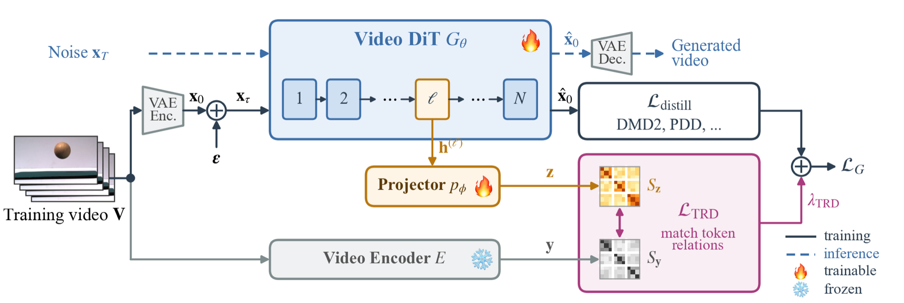

REPA-Forcing Representation Alignment for Physically Plausible Few-Step Video Generation
Paper under double-blind review
All clips above are generated by few-step students trained with REPA-Forcing.
Robot world model · Cosmos3-Nano-16B
18.45→19.06
PSNR on 321-frame rollouts; the gain grows with rollout length
Image-to-video · Wan2.2-5B
1.017→0.724
MMD² to ground truth on held-out physical processes ↓
Streaming · 30-second rollouts
41.2→59.0
Dynamic degree over Self-Forcing, 6× the training length
Highlight Action-conditioned world model · 16B parameters
Robot World Model with Cosmos3-Nano-16B
We train an interactive world simulator for the AgiBot G1 from Cosmos3-Nano-16B. Given the first frame and a per-frame action sequence, the distilled model predicts chunks of 2 latent frames in 4 steps, so the rollout should reproduce the recorded video. Both models share the first three training stages and differ only in the final Self-Forcing distillation, where we add REPA-Forcing. Both are trained on 121-frame clips and tested on held-out episodes with rollouts of 165 and 321 frames, beyond the training length.
Prediction accuracy on held-out episodes
| Method | 165 frames · 11 s | 321 frames · 21 s | ||||
|---|---|---|---|---|---|---|
| PSNR ↑ | SSIM ↑ | LPIPS ↓ | PSNR ↑ | SSIM ↑ | LPIPS ↓ | |
| Self-Forcing | 20.63 | 0.813 | 0.161 | 18.45 | 0.745 | 0.229 |
| + REPA-Forcing | 20.88 | 0.824 | 0.153 | 19.06 | 0.769 | 0.208 |
Held-out episodes · 165- and 321-frame rollouts
Clips show the late part of each rollout, where errors accumulate. Videos play in sync; use the arrows to switch episodes.
Method
Few-step distillation is the final stage of modern video generation and world-model pipelines, but existing distillation methods are designed for visual quality and diversity and lose physical plausibility in the process: distilling Wan2.1-1.3B into a 4-step DMD2 generator lowers the fraction of physically plausible videos on VideoPhy2 from 59.4% to 48.7%. Distillation objectives specify what the student should output, but leave unconstrained how it organizes spatio-temporal content internally. REPA-Forcing supplies this missing supervision by aligning the token relations of an intermediate student feature with those of a frozen video foundation model.

Target and student features
A frozen video encoder maps the training clip to patch tokens \(\mathbf y\). A small projector maps the student hidden state \(\mathbf h^{(\ell)}\) to the same grid, \(\mathbf z = p_\phi(\mathbf h^{(\ell)})\).
From tokens to relations
Instead of matching each token, we compare similarities between every pair of tokens, across space and across time. Most entries are temporal relations, which describe how content moves and changes.
One training-only loss
The loss is added to any distillation objective, is used only during training, and leaves the architecture and inference cost of the student unchanged.
\[ S_{\mathbf u}^{(d,i),(e,j)} = \big\langle \mathbf u^{d,i},\, \mathbf u^{e,j} \big\rangle, \qquad \mathbf u \in \{\textcolor{#7bd79a}{\mathbf z}, \mathbf y\} \]
\[ \mathcal L_{\mathrm{TRD}} = \frac{1}{(f\,hw)^2} \sum_{d,e=1}^{f} \sum_{i,j=1}^{hw} \max\!\Big( \big| S_{\textcolor{#7bd79a}{\mathbf z}}^{(d,i),(e,j)} - S_{\mathbf y}^{(d,i),(e,j)} \big| - m,\; 0 \Big), \qquad \mathcal L_G = \mathcal L_{\mathrm{distill}} + \lambda_{\mathrm{TRD}}\, \mathcal L_{\mathrm{TRD}} \]
Applies across tasks (text-to-video, image-to-video), distillation methods (DMD2, PDD), autoregressive rollout (Self-Forcing), and model scales (1.3B, 5B, 16B).
Image-to-Video · Wan2.2-5B · DMD2
Both students are conditioned on the same first frame.
Streaming Video Generation · 30-Second Rollouts
Both causal Wan2.1-1.3B students are trained on 5-second clips. Beyond the training horizon, the motion of Self-Forcing decays, while REPA-Forcing keeps the same level of dynamics over the whole rollout.
BibTeX
@article{anonymous2026repaforcing,
title = {REPA-Forcing: Representation Alignment for Physically Plausible Few-Step Video Generation},
author = {Anonymous},
journal = {Under review},
year = {2026}
}